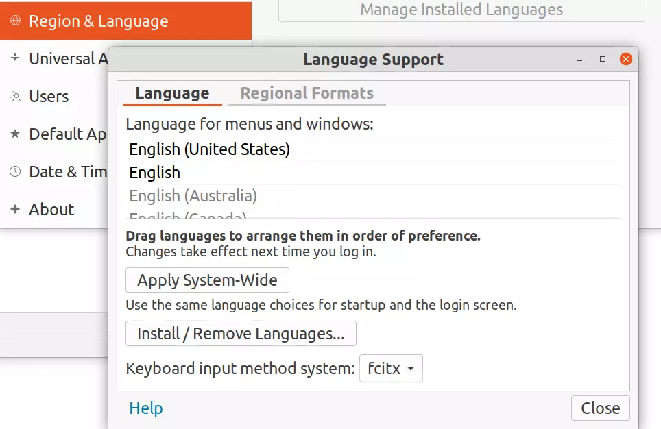

設定メモ
apps
mozc
$ sudo apt install fcitx-mozc
 fcitxにする
$ sudo apt purge ibus
chrome-remote-desktop
headlessでセットアップするとPINの設定が簡単 https://cloud.google.com/architecture/chrome-desktop-remote-on-compute-engine
/opt/google/chrome-remote-desktop/chrome-remote-desktop の設定はここを参考にDISPLAY=:0で使えるようにする。
https://qiita.com/ninose14/items/473369d76814174dd58f
chrome
debパッケージを落としてdpkg -iすればいい。debパッケージいれるとaptの設定してくれるみたい？
$ cat /etc/apt/sources.list.d/google-chrome.list [~]
### THIS FILE IS AUTOMATICALLY CONFIGURED ###
# You may comment out this entry, but any other modifications may be lost.
deb [arch=amd64] http://dl.google.com/linux/chrome/deb/ stable main
issues
複数のkeyboardで入力すると動かなくなる
同じキーボードを２つ左右に並べて使っている（いわゆるデュアルキーボード？）のでこれは致命的。
- https://bugs.launchpad.net/ubuntu/+source/gnome-shell/+bug/1777708
- https://gitlab.gnome.org/GNOME/gnome-shell/-/issues/1858
- https://bugs.launchpad.net/ubuntu/+source/fcitx/+bug/1920867
gnome-shellから永遠と以下のようなエラーが出て、キーボードを叩いている間GUIがプチフリーズする。
Window manager warning: Overwriting existing binding of keysym 33 with keysym 33 (keycode c).
gnome + x11 でどこかが悪い。
→ debian packageつくった https://packagecloud.io/atotto/mutter
https://gitlab.gnome.org/GNOME/gnome-shell/-/issues/1858#note_818548 のワークアラウンドを適用。副作用はあると思うけど、動かなくなるよりまし・・
authentication is required to create a color profile
ログインすると聞かれる。
- https://unix.stackexchange.com/questions/417906/authentication-is-required-to-create-a-color-profile
$ cat <<EOF | sudo tee /etc/polkit-1/localauthority/50-local.d/xrdp-color-manager.pkla
[Allow colord for all users]
Identity=unix-user:*
Action=org.freedesktop.color-manager.create-device;org.freedesktop.color-manager.create-profile;org.freedesktop.color-manager.delete-device;org.freedesktop.color-manager.delete-profile;org.freedesktop.color-manager.modify-device;org.freedesktop.color-manager.modify-profile
ResultAny=no
ResultInactive=no
ResultActive=yes
EOF
で回避。